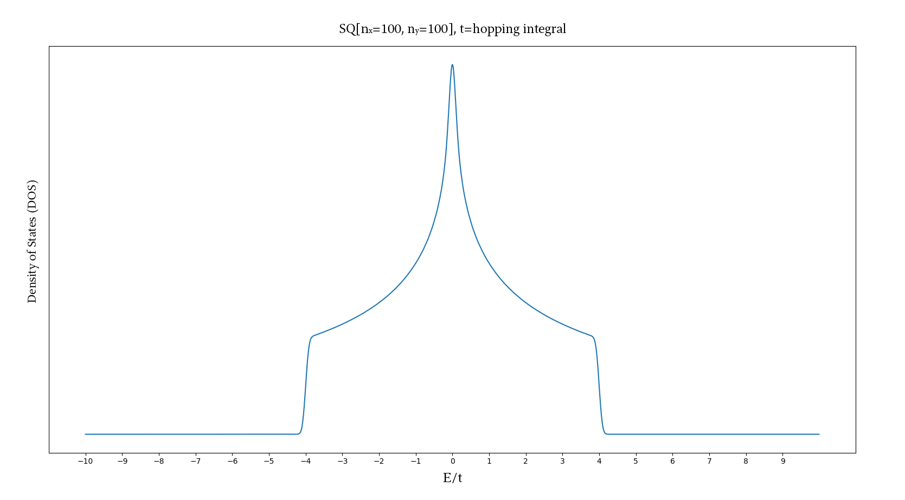
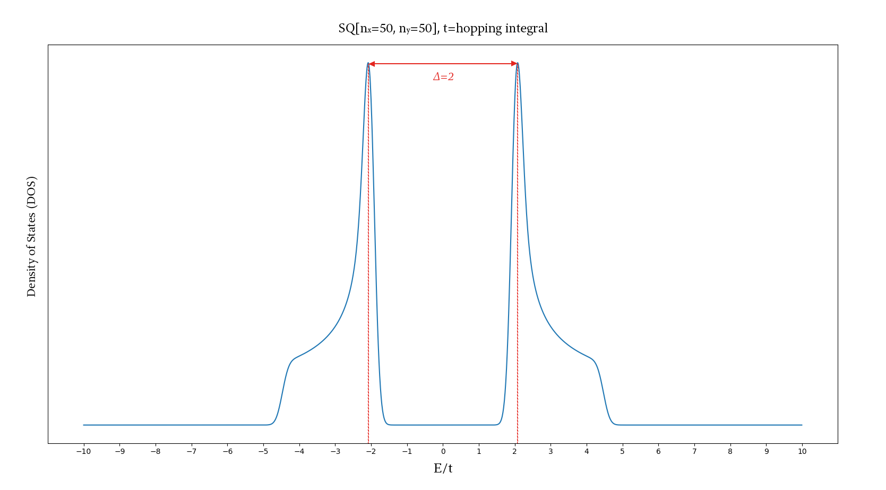
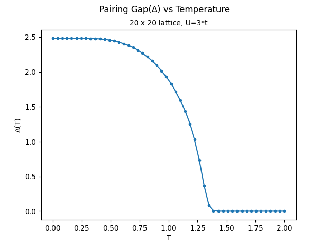

ホーム
|
English
ー (2022/09) s-波等質正方形ラティス超伝導体に「BdG 方程式」の利用
解説: BdG(Bogoliubov-de Gennes) 方程式は Bogoliubov-変換した BCS(Bardeen-Cooper-Schrieffer) 波動関数の解決方法である。これは自一致した場な方法で基づける。
まず、糺すのために BdG 無き、強結合近似ハミルトニアンを状態密度の勘定に利用する：

や～！プロットは正確らしい見ている。
それでは、ハミルトニアンに BdG (電子対)の項を加えて見よう：

あらあら！中心は分けた。このような分けは超伝導体の特徴です
さて、電子対(Δ)と温度の関係をグラフしよう：

これは一般二階相変態のグラフで、面白いです
若し、もっと情報/結果を知りたいの場合は、このプレゼンに続けよ
ー (2021/06) ニューラルネットワークポテンシャル (NNP) を使用した Li3PS4 のメルトクエンチ MD シミュレーション。
解説: LAMMPSと言うソフトを使って、色々なシミュレーションパラメーターを変わって、観測を集めた
若し、もっと情報/結果を知りたいの場合は、このプレゼンに続けよ